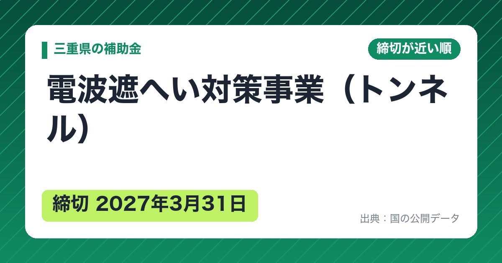

電波遮へい対策事業（トンネル）

締切 2027年3月31日｜上限 要確認
概要
| 対象地域 | 鉄道トンネル、道路トンネル |
|---|---|
| 補助上限額 | 要確認 |
| 補助率 | 1/2、1/3、5/12 |
| 受付期間 | 2020年3月31日 〜 2027年3月31日 |
| 対象の従業員数 | 従業員数の制約なし |
| 利用目的 | 新たな事業を行いたい / 販路拡大・海外展開をしたい / イベント・事業運営支援がほしい / 事業を引き継ぎたい / 研究開発・実証事業を行いたい / 人材育成を行いたい / 資金繰りを改善したい / 雇用・職場環境を改善したい / 災害（自然災害、感染症等）支援がほしい / 安全・防災対策支援がほしい / まちづくり・地域振興支援がほしい / 設備整備・IT導入をしたい / エコ・SDGs活動支援がほしい / 教育・子育て・少子化支援がほしい / スポーツ・文化支援がほしい |
| 対象業種 | 情報通信業 |
公募の内容（原文の抜粋）
■目的・概要（サマリ）:
電波が遮へいされる鉄道・道路トンネルや医療施設内でも携帯電話等が利用できるようにし、非常時等における通信手段の確保など、電波の適正な利用を確保することを目的とする。
■目的・概要:
トンネルにおいて、無線局とその通信の相手方である無線局又は無線設備との間の電波が遮へいされることにより携帯電話等の無線通信を利用することが困難な場合に、代替する伝送路を開設するために必要な無線通信用施設及び設備を設置する事業であって、一般社団法人等が行うもの。
■問い合わせ先:
総務省総合通信基盤局電波部移動通信課 第一業務係
TEL：03-5253-5894
三重県のほかの補助金
- 令和７年度（補正） 商用車等の電動化促進事業（建設機械）（締切 2027年1月29日）
- 四日市市中小企業脱炭素経営支援事業費補助金（締切 2027年3月31日）
- 四日市市燃料電池自動車導入促進補助金（締切 2027年3月31日）
- 携帯電話等エリア整備事業（締切 2027年3月31日）
- 【三重県 鈴鹿市】令和8年度創業促進補助金（締切 2027年3月31日）